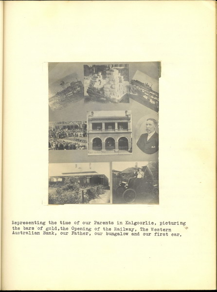
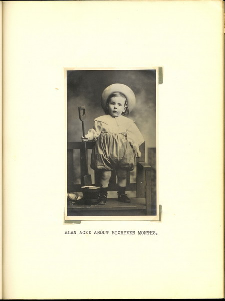
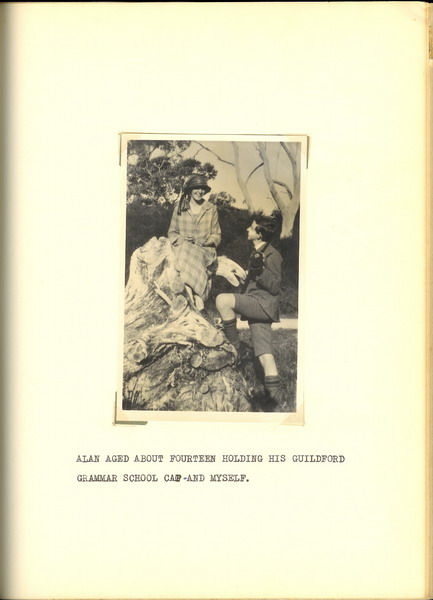
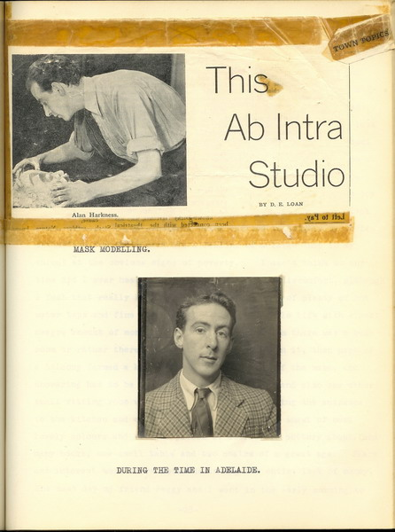
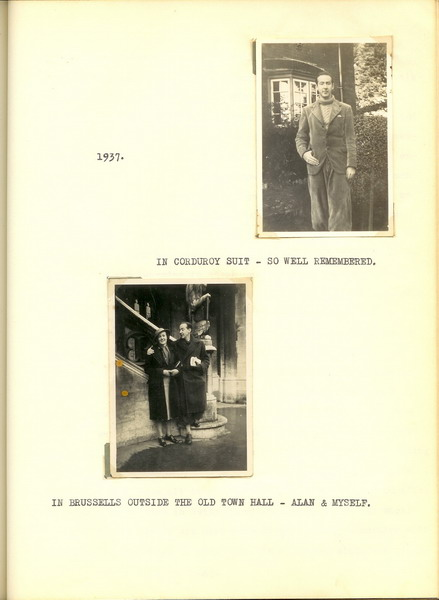
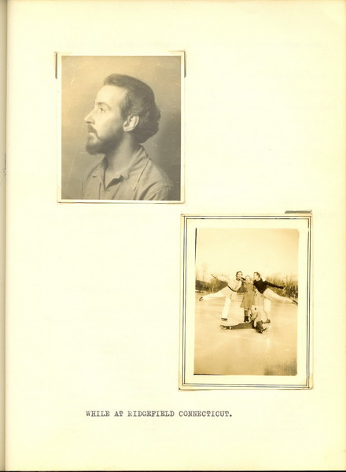

from "About Alan"These early images come from the pages of About Alan, a memoir written by Alan Harkness' sister, Doris Christie.  Family history: Kalgoorlie  Alan at eighteen months.  Alan and his sister, Doris  Ab-Intra Studio. Adelaide days.  Alan and Doris in Europe. In Rome they stayed in the flat where Keats died.  In Ridgefield, Connecticut. Copy of letter from Dennis Glenny to Alan's sister, Doris Christie. 7/3/1952 Dear Doris, It is hard to find words to express to you my feelings of sorrow and sympathy for you at this time. I can only remember how much of real triumph and glory there was in Alan's life - not as the world views triumph and glory, of course - but in the consistent following a line of spiritual honesty in everything he did. His influence in my life was considerable even though it was a comparatively short time that we worked together. But it was the combined impact of Alan, Michael Chekhov and Miss Crowther that completely changed the course of my life - and Alan was the person who made it possible for me to work with Mr.Chekhov and Miss Crowther. I can remember the joy of working and the joy of living that Alan imparted. His life was a constant affirmation of a Christian scale of values - so much needede in the dark materialistic atmosphere of society today. Until I'd met Alan, I'd never met anybody who really set themselves out to search into the truth of things. When I first came across him, I thought it extremely odd - conventional cliches of thinking tend to make us shy of really honest people - but the more I saw of Alan, in working and in daily talking - the wider horizons of imagination were opened up. I didn't think that I could ever emulate Alan, but it was inspiring to be in touch with his keen heightened truthfulness. Over the years I know he has been developing even more; and I had always hoped to have the experience of working once more under his direction. You may feel pride, Doris, in the knowledge of the amount of love and guidance Alan was able to give to a great many people - and how he has been able to bring a new impulse into the life of the theatre, which will be recognised more and more in the years to come. It is a deep loss that he should have been taken from us - just when his knowledge was reaching its richest fruition. I hope that we may see you in these parts again some time. You know that Miss Crowther and I regard you as 'family' and feel that you are as much a part of us as Alan is. With love and affection Dennis Glenny *** |